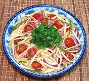

|
Green Mango SaladPhilippine - Ensaladang Mangga | ||||
| Makes: Effort: Sched: DoAhead: |
1-1/2 # ** 30 min BestYes |
Mangos are very popular in the Philippines, starting when they are still green and sour. Tart Green Mango salads are as much a part of the cuisine as they are in Thailand and Vietnam. | |||
|
1 5 12 1 1 1 1/4 |
# oz T c |
Green Mango (1) Onion, red Grape Tomatoes Green Chili (2) Thai Chili, red Bagoong (3) Cilantro |
Make - (30 min)
|